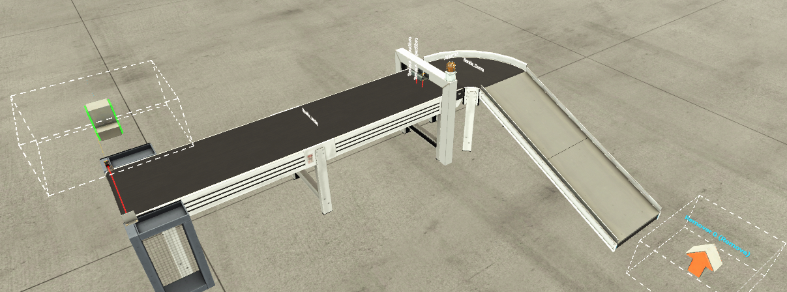
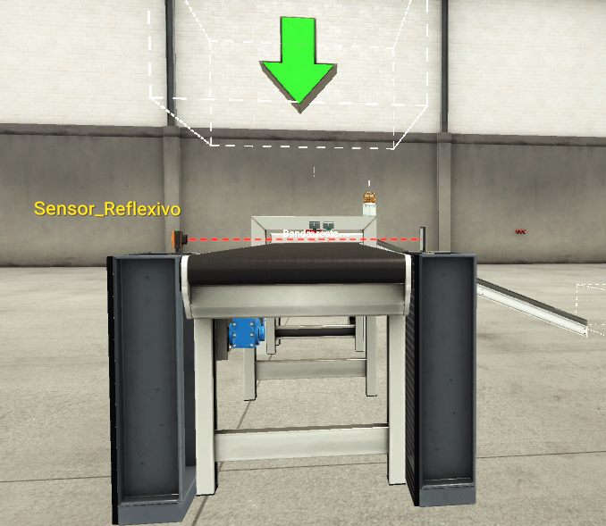
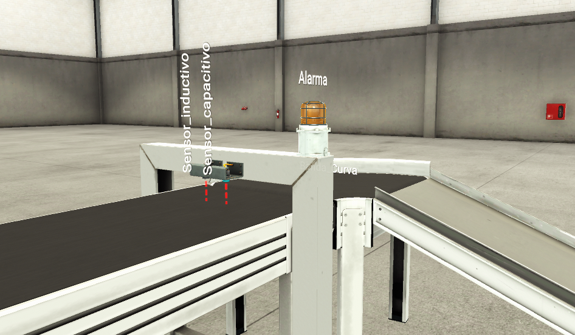
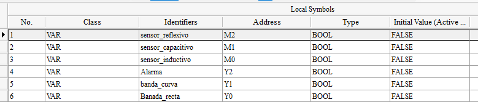
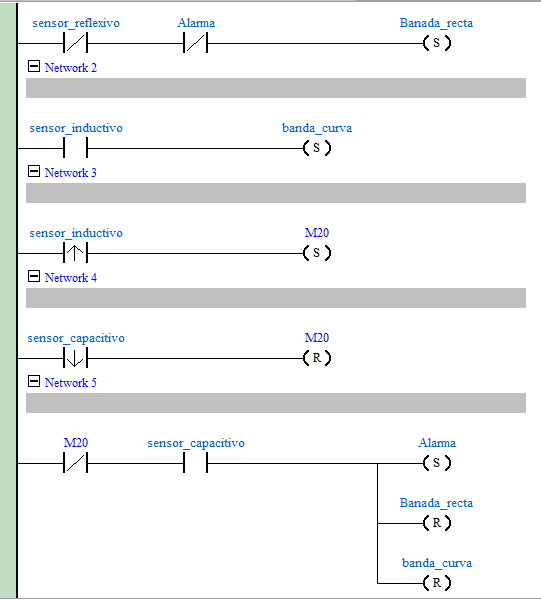
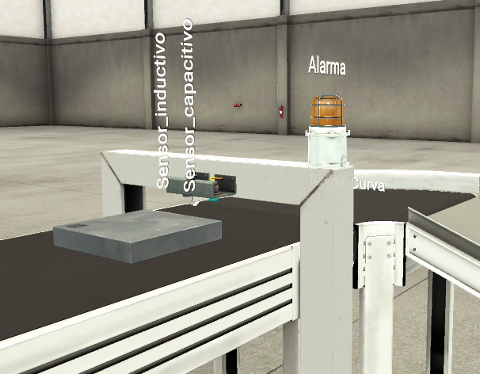
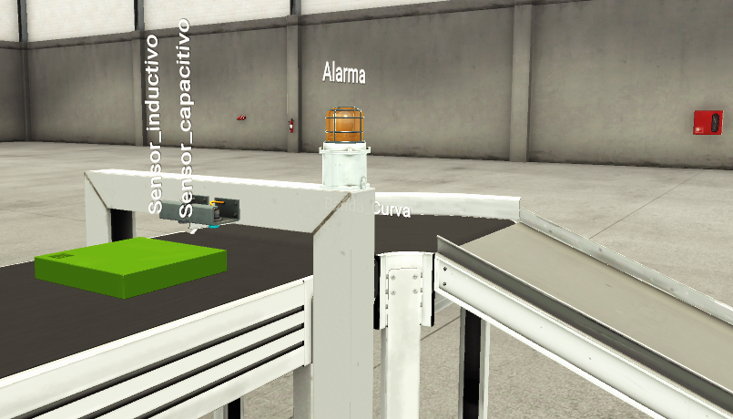

1. Objetivo general
Desarrollar un programa de control para una planta automatizada utilizando un PLC Delta SX2, Factory I/O y KEPServer. Luego deberás simular el proceso y explicar técnicamente cómo funciona cada parte del sistema.
2. Recursos entregados
- Archivo de planta en Factory I/O.
- Archivo de configuración de KEPServer.
- Proyecto o base de trabajo para PLC Delta SX2.
- Direcciones de entradas y salidas asociadas al proceso.

Video de referencia
Observa el video antes de comenzar la programación. Identifica el recorrido de las piezas, la respuesta de los sensores, el funcionamiento de las bandas transportadoras y la condición que activa la alarma.
3. Descripción del proceso
La planta recibe objetos desde un depósito automático. Los objetos pueden ser metálicos o no metálicos. A los objetos no metálicos los llamaremos baldosas.
Cuando un objeto cae sobre la banda principal, se activa un sensor reflectivo. Esta detección inicia el proceso y enciende la banda recta.
Luego, el objeto pasa por un marco donde se encuentran dos sensores: un sensor inductivo y un sensor capacitivo.
Pieza metálica
Si el objeto es metálico, se deja pasar. La banda recta continúa funcionando y se activa la banda curva para retirar la pieza del proceso.
Baldosa
Si el objeto es no metálico, se considera una condición de fallo. La banda recta y la banda curva se detienen, se activa la alarma y el proceso finaliza.


4. Tabla de señales
Completa o verifica la tabla de entradas y salidas del proceso. Debes usar las direcciones configuradas para el PLC Delta SX2.
| Elemento | Dirección | Tipo | Función en el proceso |
|---|---|---|---|
| Sensor reflectivo | M2 | Entrada / marca | Detecta la caída o presencia inicial del objeto. |
| Sensor inductivo | M0 | Entrada / marca | Detecta si el objeto es metálico. |
| Sensor capacitivo | M1 | Entrada / marca | Detecta la presencia de objetos metálicos y no metálicos. |
| Banda recta | Y0 | Salida | Transporta el objeto desde la entrada hacia la zona de clasificación. |
| Banda curva | Y1 | Salida | Retira la pieza metálica después de la clasificación. |
| Alarma | Y2 | Salida | Indica condición de fallo cuando se detecta una baldosa. |

5. Programación del PLC
Desarrolla el programa Ladder necesario para controlar la planta. La lógica mínima debe cumplir las siguientes condiciones:
- Cuando el sensor reflectivo detecta un objeto, debe encenderse la banda recta.
- Si el objeto detectado por el marco es metálico, la banda curva debe encenderse y el objeto debe continuar el proceso.
- Si el objeto corresponde a una baldosa, ambas bandas deben detenerse.
- Cuando se detecta una baldosa, debe activarse la alarma.
- La alarma representa el fin del proceso en esta actividad.

6. Simulación del proceso
Abre la planta en Factory I/O, carga la configuración de KEPServer y ejecuta el programa en el PLC Delta SX2. Luego observa el comportamiento del sistema.
Prueba con objeto metálico
- El objeto cae en la banda.
- Se activa el sensor reflectivo.
- Se enciende la banda recta.
- El sensor inductivo detecta metal.
- La banda curva se activa.
- El objeto continúa y sale del proceso.
Prueba con baldosa
- El objeto cae en la banda.
- Se activa el sensor reflectivo.
- Se enciende la banda recta.
- El sensor capacitivo detecta el objeto.
- El sensor inductivo no detecta metal.
- Se detienen la banda recta y la banda curva.
- Se activa la alarma.


7. Análisis técnico del proceso
7.1 Sensor reflectivo
Explica cómo funciona el sensor reflectivo dentro de esta planta. Debes indicar qué detecta, en qué momento inicia el proceso y qué ocurriría si el sensor no detectara el objeto.
7.2 Sensor inductivo
Explica por qué el sensor inductivo permite identificar objetos metálicos. Relaciona su funcionamiento con la clasificación entre pieza metálica y baldosa.
7.3 Sensor capacitivo
Explica qué detecta el sensor capacitivo y por qué es útil para reconocer la presencia de objetos no metálicos.
7.4 Banda recta
Describe cuándo se activa, qué función cumple y por qué debe detenerse cuando aparece una baldosa.
7.5 Banda curva
Describe cuándo se activa, qué función cumple y por qué no debe operar en condición de fallo.
7.6 Fallo y alarma
Explica cuál es el fallo principal del proceso y cuál es la función de la alarma. Recuerda que el fallo es la condición anormal detectada, mientras que la alarma es la respuesta o señal que informa dicha condición.
8. Preguntas de profundización
- ¿Por qué no basta con usar solo el sensor capacitivo para clasificar los objetos?
- ¿Qué pasaría si el sensor inductivo queda permanentemente activado?
- ¿Qué pasaría si el sensor capacitivo no detecta la baldosa?
- ¿Por qué es importante detener ambas bandas cuando se produce una condición de fallo?
- ¿Qué diferencia existe entre una detención normal del proceso y una detención por alarma?
- ¿Cómo podrías agregar un botón de reset para reiniciar el sistema después de la alarma?
- ¿Qué riesgo existe si la banda recta sigue funcionando después de detectar una baldosa?
- ¿Qué mejora implementarías para retirar automáticamente la baldosa?
- ¿Qué aplicación industrial real podría usar una lógica similar de clasificación?
- ¿Qué variables agregarías si tuvieras que mostrar el estado del sistema en una pantalla HMI?
9. Pauta de autoevaluación
| Criterio | Sí | Parcialmente | No |
|---|---|---|---|
| Comprendí la función general de la planta. | ☐ | ☐ | ☐ |
| Identifiqué correctamente sensores, bandas y alarma. | ☐ | ☐ | ☐ |
| Programé la lógica básica en el PLC Delta SX2. | ☐ | ☐ | ☐ |
| Probé el funcionamiento con pieza metálica. | ☐ | ☐ | ☐ |
| Probé el funcionamiento con baldosa. | ☐ | ☐ | ☐ |
| Expliqué la diferencia entre fallo y alarma. | ☐ | ☐ | ☐ |
| Incluí evidencias o capturas de la simulación. | ☐ | ☐ | ☐ |
10. Pauta de evaluación para el profesor
| Criterio | 4 Logrado | 3 Adecuado | 2 Básico | 1 Insuficiente |
|---|---|---|---|---|
| Comprensión del proceso automatizado. | ☐ | ☐ | ☐ | ☐ |
| Identificación correcta de sensores y actuadores. | ☐ | ☐ | ☐ | ☐ |
| Uso correcto de direcciones y variables del PLC Delta SX2. | ☐ | ☐ | ☐ | ☐ |
| Funcionamiento de la lógica programada. | ☐ | ☐ | ☐ | ☐ |
| Correcta simulación en Factory I/O mediante KEPServer. | ☐ | ☐ | ☐ | ☐ |
| Análisis del sensor reflectivo, inductivo y capacitivo. | ☐ | ☐ | ☐ | ☐ |
| Análisis de bandas recta y curva. | ☐ | ☐ | ☐ | ☐ |
| Comprensión del concepto de fallo y alarma. | ☐ | ☐ | ☐ | ☐ |
| Claridad, orden y presentación del informe. | ☐ | ☐ | ☐ | ☐ |
Escala sugerida
| Puntaje total | Nivel de desempeño |
|---|---|
| 33 a 36 puntos | Excelente |
| 25 a 32 puntos | Bueno |
| 18 a 24 puntos | Básico |
| 9 a 17 puntos | Insuficiente |